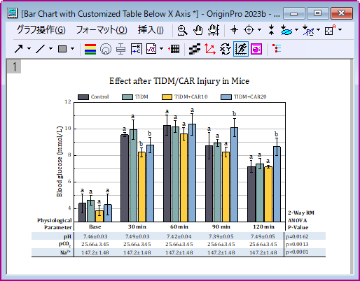
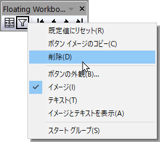

フローティングウィンドウ
Floating-Windows
2023bより、Originのウィンドウは独立したウィンドウとしてOriginのワークスペースの外に移動させることができます。これらのフローティングウィンドウには編集できるメニューとツールバーボタンが付属しますので、これらの機能を使う場合にOriginのメインウィンドウに戻す必要はありません。
ワークブックや行列ブック、グラフ、レイアウト、イメージウィンドウなど、どんなOriginのウィンドウもフローティングウィンドウとしてOriginのワークスペースの外に移動することができます。
フローティングウィンドウがある状態でプロジェクトファイルを保存して閉じることができます。この場合、プロジェクトを再度開いたときもフローティングウィンドウは保持されます。
ウィンドウを持ち出す方法
外側にドラッグ
フローティングウィンドウの機能はウィンドウ：フローティングウィンドウからオンオフを切り替えることができます。オンにした場合、OriginウィンドウはドラッグしてOriginのワークスペースの外に移動できます。

Note: システム変数@FWDによってドラッグによるウィンドウの持ち出し方向を制御できます。
- @FWD=0: 全ての方向へのドラッグが可能
- @FWD=1: 水平方向のみ（デフォルト）
- @FWD=2: 垂直方向のみ
|
メニュー
複数のモニターを私用している場合、ウィンドウ：アクティブウィンドウをフロート を選択、もしくはホットキー Ctrl + F9を使ってアクティブウィンドウをフロートできます。
- Originのワークスペースでウィンドウを最大化している場合、ホットキーやメニューを使うことでフロートさせ、2つ目のモニター上に最大化して表示できます。
- PCに複数のモニターがある場合、システム変数@FWLMでどのモニターにウィンドウをフロートさせるかを制御できます。
例:
スクリプトウィンドウで@FWLM=2;を実行し、ウィンドウ：アクティブウィンドウをフロートを選択すると、アクティブウィンドウは2つ目のモニターにフロートします。
フローティングウィンドウを戻す
- 単一ウィンドウはOriginのワークスペースにドラッグアンドドロップすることで戻すことができます。
- 全てのフローティングウィンドウをOriginのワークスペースに戻す場合、ホットキーCtrl+Shift+F9、もしくはウィンドウ：フローティングウィンドウを戻すを使います。

- 以下のLabTalkスクリプトで全てのフローティングウィンドウをOriginのワークスペースに戻すことができます。
document -fma;
 |
他のフォルダに切り替える場合は、上記の2と3の方法を使用して、すべてのフローティングウィンドウを各々のフォルダに戻します。
すべてのフローティングウィンドウを現在のフォルダ (それが自身のフォルダであるかどうかに関係なく) に格納したい場合は、以下のLabTalkスクリプトを実行できます。
document -fmac;
|
フローティングを制御するLabTalkスクリプト
アクティブウィンドウをフロートさせるか戻すかを制御するLabTalkスクリプトを使います。
page.floating=0; //アクティブなフローティングウィンドウを戻す
page.floating=1; //アクティブウィンドウをフロートする複数モニターがある場合、ウィンドウは1つ目のモニターにフロートします。
page.floating=2; //アクティブウィンドウを2つ目のモニターにフロートします
page.floating=@FWLM; //アクティブウィンドウはシステム変数@FWLMで指定したモニターにフロートします
ツールバーボタンとメニュー
フローティングウィンドウには独自のそれぞれメニューとツールバーボタンがあります。一部のメニューやボタンがフローティングウィンドウに表示されない場合は、メインのOrigin ウィンドウに戻ってこれらのツールを選択できます。
- 
メニューの編集
フローティングウィンドウで表示されるメニューはフローティングウィンドウメニューダイアログで編集でき、この項目は環境設定：フローティングウィンドウメニューを編集を選択して開くことができます。
例えば、
ツールバーボタンの編集
- フローティングウィンドウをで表示されるツールバーボタンは表示：ツールバーもしくはCtrl+Tで編集できます。カスタマイズダイアログ内、ツールバータブにあるフローティンググラフ、フローティングレイアウト、フローティング行列、フローティングワークブックで設定します。編集したいフローティングウィンドウツールバーの種類を選択し、ボタングループタブにあるボタンをドラッグアンドドロップします。
例えば、
- 
- ボタングループタブにある最後のグループはOriginにインストールされたアプリのものです。これらの中から任意のアプリをフローティングウィンドウツールバーにドラッグできます。
オブジェクトマネージャ
オブジェクトマネージャの表示/非表示
それぞれのフローティングウィンドウにあるオブジェクトマネージャはボタンで表示非表示を切り替えられます。
メインフレームとフローティングウィンドウでのオブジェクトマネージャ
- メインフレームのオブジェクトマネージャが表示状態でドッキングされている場合、子ウィンドウをフローティングすると、フローティング ウィンドウ内にオブジェクトマネージャが表示されます。
- メイン フレームのオブジェクトマネージャがドッキングされていない場合、子ウィンドウをフローティングすると、その中のオブジェクトマネージャはデフォルトで非表示になります。
- メインフレームのオブジェクトマネージャは、アクティブウィンドウに対して機能します。フローティングウィンドウのオブジェクトマネージャはフローティングウィンドウでのみ機能します。フローティングウィンドウがアクティブウィンドウの場合、同じ項目を表示するオブジェクトマネージャが2つあることになります。
オブジェクトマネージャの場所
- オブジェクトマネージャの場所をLabTalkスクリプトのPageプロパティpage.fwomで制御できます。LabTalkスクリプトを実行すると、すぐに場所を変更できます。
page.fwom=0; //オブジェクトマネージャを非表示にします
page.fwom=1/2/3/4/5; //各数字はオブジェクトマネージャの位置で 上/左/右/下/フロート
page.fwom=10; //Object Manager が非表示の場合、これを使用して、最後に設定した位置に表示できます
- システム変数@FWOMは、新しく作成されたウィンドウがフローティングしている場合のオブジェクトマネージャの場所を決定します。
Note: このシステム変数は、既存のウィンドウでは設定を変更しません。新しく追加されたウィンドウにのみ設定が反映します。
@FWOM=0; // オブジェクトマネージャ非表示
@FWOM=1/2/3/4; // 上/左/右/下のオブジェクトマネージャ ( 3がデフォルト)
@FWOM=5; //オブジェクトマネージャはフローティング
例えば、
- メインフレーム内のオブジェクトマネージャがドッキングされていないとします。デフォルト@FWOM=3では、新しいウィンドウBook1を作成してOriginワークスペースの外にドラッグし、ボタンをクリックしてオブジェクトマネージャを表示すると、オブジェクトマネージャが右側に表示されます。
- スクリプトウィンドウで@FWOM=2；を実行すると、既存ウィンドウBook1のオブジェクトマネージャの位置は変更されません。しかし、システム変数変更後に別の新しいウィンドウBook2を作成し、それをフローティングウィンドウにしてオブジェクトマネージャを表示すると、オブジェクトマネージャが左に表示されます。
Note:
- @FWOMは新しく作成された子ウィンドウにのみ設定が反映されます。子ウィンドウをドラッグしてフロートし、オブジェクトマネージャの位置を変更すると、子ウィンドウはこの新しい変更を記憶し、@FWOMの影響を受けなくなります 。
- メインフレームのオブジェクトマネージャがドッキングされていない場合、システム変数@FWOM=1/2/3/4に設定されていても、新しいフローティングウィンドウでのオブジェクトマネージャは引き続き非表示になります。メインフレームのオブジェクトマネージャをドッキングすると、フローティングウィンドウのオブジェクトマネージャは@FWOMの設定に従います。
- メイン フレームのオブジェクトマネージャが表示されている場合 (ドッキングまたはフローティング)、システム変数@FWOM=0に設定すると、フローティングウィンドウのオブジェクトマネージャは非表示になります。
- メイン フレームのオブジェクトマネージャがフローティングの場合、システム変数@FWOM=5に設定すると、フローティングウィンドウのオブジェクトマネージャもフローティングになります。
|
フローティングウィンドウの自動固定
- ウィンドウをフローティングウィンドウとしてワークスペースの外にドラッグすると、自動的に固定に設定され、
 ボタンがウィンドウピンタイトル バーに表示されます。ウィンドウをメイン ワークスペースに格納すると、ウィンドウの固定が自動的に解除されます。
ボタンがウィンドウピンタイトル バーに表示されます。ウィンドウをメイン ワークスペースに格納すると、ウィンドウの固定が自動的に解除されます。
- フローティングウィンドウは、システム変数@PWS=0であっても、ワークスペースの外側に表示されます。これは、固定された非フローティングウィンドウとは異なります。ウィンドウ固定のセクションを参照してください。
- 現在のフォルダがフローティングウィンドウのフォルダでない場合、フォルダ情報が固定されたウィンドウのタイトルに表示されます。
- フローティングウィンドウのフォルダに戻るには、フォルダとウィンドウツールバーの元のフォルダー行くボタンをクリックするか、 ウィンドウタイトルバーを右クリックして元のフォルダに行くを選択します。
- フローティングウィンドウをワークスペースにドラッグして現在のフォルダに簡単に移動できます。
プロジェクトエクスプローラーでのフローティングウィンドウ
プロジェクトエクスプローラーパネルの下部では、フローティングウィンドウについてはウィンドウ名が異なる色を使って表示されています。
|
システム変数@FWCAと@FWCIを使ってアクティブなフローティングウィンドウとアクティブでないフローティングウィンドウの名前の色を設定できます。
@FWCA=color(0,255,0,1); //アクティブなフローティングウィンドウの名前の色を緑にします
デフォルトの色に戻す場合は、環境設定：システム変数を選択してダイアログを開き、@FWCAまたは@FWCIの項目を削除します。
|
フローティングウィンドウでのダイアログの表示
現在のロジックではダイアログの初期位置はカーソルのあるモニターの中心にダイアログが表示されます。新しい位置にダイアログを移動させる場合、その場所はその特定のOriginセッションでのみ記憶されます。Originを再起動すると、再度カーソルの場所が使われます。
例えば、たとえば、2つのグラフ ウィンドウがあり、1 つはメインモニターのメインの Originワークスペースにあり、もう1つは2つ目のモニターにフローティンググラフとして存在するとします。カーソルがメインワークスペースにあり、グラフウィンドウをダブルクリックして作図の詳細ダイアログを開くと、メインモニターの中央に表示されます。作図の詳細ダイアログを開くためにフローティンググラフウィンドウをダブルクリックすると、カーソルが2つ目のモニターに置かれ、ダイアログは2つ目のモニターの中央に表示されます。
ダイアログ位置を調整する場合、ダイアログの位置はそれぞれのモニター独自のものになります。上記の例ではメインモニターと2つ目のモニターで作図の詳細ダイアログの位置調整を行っています。位置は別々に記憶されることがわかります。また、Origin を再起動すると、位置がリセットされ、カーソルロジックに戻ります。